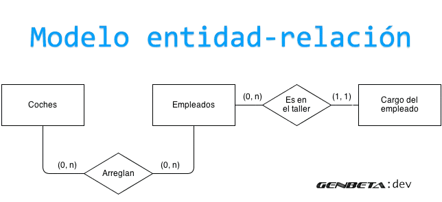
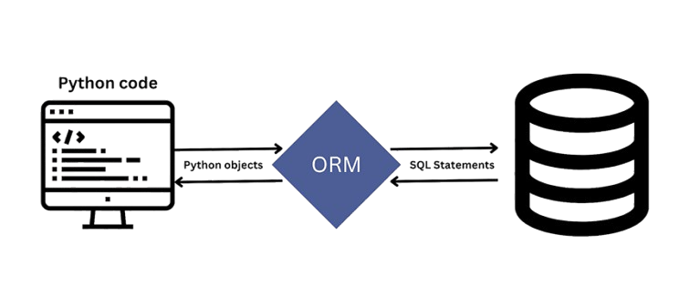

Modelo Entidad-relación: El Modelo Entidad-relación es una herramienta de
modelado de datos que se utiliza para representar la estructura lógica de una base de datos.
Entidades: Representan objetos o conceptos del mundo real que tienen
existencia independiente. Por ejemplo, en una base de datos de una tienda, las entidades
podrían ser Cliente, Producto y Pedido
Atributos: Son las propiedades o características de las entidades.
Por ejemplo, un Cliente podría tener atributos como Nombre, Dirección y Teléfono.
Relaciones: Describen cómo se asocian las entidades entre sí.
Por ejemplo, un Cliente realiza un Pedido, y un Pedido contiene Productos

Mapeo objeto-relacional: es una técnica que permite a los
desarrolladores interactuar con una base de datos relacional utilizando un lenguaje de
programación orientado a objetos. En lugar de escribir consultas SQL directamente, los
desarrolladores pueden trabajar con objetos que representan los datos en la base de datos.
Objetos y Clases: En un ORM, las tablas de la base de datos se
mapean a clases en el lenguaje de programación, y las filas de las tablas se mapean a
instancias de esas clases.
Consultas Simplificadas: Los ORMs permiten realizar operaciones
CRUD (Crear, Leer, Actualizar, Eliminar) de manera más intuitiva y con menos código SQL.
